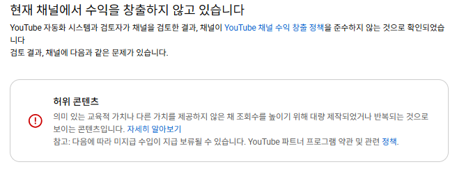

AI 유튜브 채널, 어떤 주제로 시작해야 할까?
유튜브를 하고 싶어도 시작하지 못하는 이유 중 하나가 바로 "어떤 채널을 해야 할까?" 하는 고민 때문이 아닌가요? 결론부터 말하면, 처음부터 완벽한 주제를 찾으려고 하지 않아도 됩니다.
유튜브 수익화를 빠르게 하는 방법 중 하나는 벤치마킹을 잘하는 것입니다.
"유튜브를 잘한다 = 벤치마킹을 잘한다"
내 채널을 빠르게 키우고 싶다면, 이미 조회수가 터지고 있는 영상과 주제를 벤치마킹하는 것이 가장 빠른 방법입니다. 특히 AI 유튜브라면 더욱 그렇습니다.
주제는 자신이 관심 있는 분야로 정하는 것이 좋습니다. 수익화가 목적이라면 관심 없는 주제도 AI로 만들 수 있지만, 관심 있는 분야가 유리한 이유는 지속성 때문입니다. 내가 흥미를 느끼는 분야의 콘텐츠를 만들어야 지치지 않고 꾸준히 할 수 있지 않을까요?
살아남는 AI 콘텐츠의 조건
"딸깍" 한 번으로 유튜브 수익화를 할 수 있다?
옛날에는 그랬을지 모르지만, 2025년 하반기부터 AI 영상에 대한 유튜브 정책이 크게 강화됐습니다.
하지만 중요한 것은, 더 이상 AI를 사용하지 말라는 정책이 절대 아닙니다.
유튜브가 제재하는 콘텐츠는 크게 두 가지입니다.
- 양산형 콘텐츠 — 사람이 개입하지 않고 AI로만 찍어낸 저품질 콘텐츠
- 가치 없는 콘텐츠 — 정보성, 교육적 목적이 없는 의미 없는 콘텐츠
사실 가장 좋은 건 얼굴 노출, 적어도 목소리 노출이 있는 콘텐츠입니다. 하지만 AI 콘텐츠를 만들려는 이유가 바로 얼굴과 목소리 노출이 부담스럽고, 조금 더 쉽게 영상을 만들기 위함이 아닌가요?
그렇다면 답은 하나입니다. AI로 고품질의 정보성, 교육적 가치가 있는 영상을 만들면 됩니다. 채널 삭제나 수익화 정지를 당할 이유가 없습니다.
쉽게 말해, "~학"이 들어가는 콘텐츠가 해당된다고 생각하는데요. 경제학, 심리학, 건강 정보처럼 정보를 주거나 교육적 가치가 있는 콘텐츠들이 이에 해당합니다.
하지만 뜨는 주제와 트렌드는 계속 바뀌기 때문에, 새로운 주제의 채널이 생기면 이 사이트에 수시로 업데이트할 예정입니다.
직접 수익화 정지를 당해봤습니다
저는 AI로 수많은 주제의 콘텐츠를 만들어봤습니다. 그중 수익화 정지를 당한 채널이 2개 있습니다.
첫 번째 — 약 15만 구독자 AI 숏츠 채널
2024년부터 약 1년간 매일같이 영상 하나에 4~5시간씩 공을 들여 만든 채널이었습니다. 그 당시 미국의 한 인기 채널을 벤치마킹한 시각적 콘텐츠였습니다. 하지만 정지를 당한 이유는, 이 콘텐츠는 교육적 가치도 없고 어떤 정보를 전달하는 콘텐츠도 아니라는 것이었습니다.
2026년 4월 초, 결국 수익화 정지 통보를 받았습니다.

두 번째 — 시니어 사연 채널
한국 시니어를 타겟으로 막장 드라마, 고부갈등, 사이다 이야기 등을 AI 대본으로 만들어 이미지와 함께 올리는 라디오 형식 채널이었습니다. 이런 콘텐츠를 만드는 사람들이 굉장히 많았는데, 2026년 초부터 이러한 채널들이 대거 수익화 정지를 당했습니다. 유튜브가 정보성, 교육적 목적이 없는 양산형 콘텐츠로 판단한 것입니다.
저는 현재 2개의 건강 채널을 운영하고 있으며, 수익화 정지 없이 지금도 수익이 나오고 있습니다. 그리고 유튜브에서 심리학 채널, 경제학 채널을 검색해보시면 조회수와 구독자가 높은 AI 생성 채널들이 활발하게 운영되고 있는 것을 직접 확인하실 수 있습니다.
결국 살아남은 채널들의 공통점은 하나입니다. 정보성과 교육적 가치가 있는 콘텐츠였습니다.
추천하는 콘텐츠 주제
현재 AI 유튜브에서 살아남고 있는 채널들을 바탕으로 추천하는 주제는 다음 3가지입니다.
- 건강 채널 — 질병 예방, 영양, 운동 정보 등
- 심리학 채널 — 인간 관계, 감정, 행동 심리 등
- 경제학 채널 — 재테크, 투자, 경제 상식 등
물론 꼭 이 3가지일 필요는 없습니다. 최근 AI로 만들어졌지만 조회수와 구독자가 빠르게 오르고 있는 채널이 있다면, 그것으로 시작해도 상관없습니다. 중요한 건 정보성과 교육적 가치를 갖추는 것입니다.